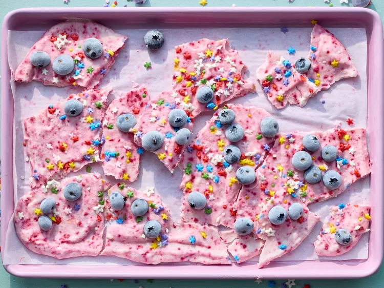

Unicorn Frozen Yogurt Bark

Description
This unicorn frozen yogurt bark is a great make-ahead and freeze kid-friendly afternoon snack or treat. Customize with desired flavors.
We used freeze-dried raspberry powder to tint the yogurt, but you can use your desired food coloring instead.
Ingredients
- 2 to 4 tablespoons freeze dried rasberry powder
- 1 1/2 cups honey flavor whole milk greek yogurt
- 1 to 1 1/2 cups blueberries, rasberries, and/or sliced fresh strawberries and/or 1/2 cup freeze dried strawberries or rasberries
- 1 tablespoon sprinkles
Directions
- Gently stir raspberry powder into yogurt in a small bowl until desired color.
Line a 9x13 inch rimmed baking sheet with a parchment paper.
Spread yogurt onto prepared baking sheet into about a 1/4 inch thick rectangle
- Top with desired fruit and sprinkles. Cover with plastic wrap, then freeze until firm, at least 2 hours.
Let stand 5 minutes. Break into pieces to serve.(To store, layer pieces between sheets of parchment paper in a freezer container. Freeze up to 2 weeks.)
Home